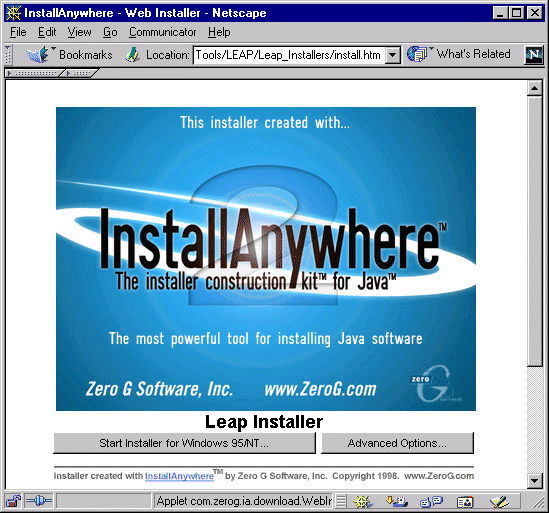
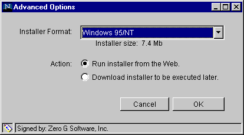
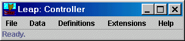

Last modified: Sat Aug 28 14:06:21 HST 1999
This chapter contains instructions for downloading and installation of the system. We are currently in the process of upgrading the Leap installation software, and as a result there may be temporary minor inconsistencies between the screen images you see presented in this chapter and the latest version of Leap.

If you want to install the system directly onto your computer, and InstallAnywhere has correctly identified the type of computer you are using, then click the left button. This will initiate the process of downloading and installing the Leap toolkit and the associated Java Runtime Environment (JRE) for your environment.
Clicking the "Advanced Options" button brings up the following window, which gives you some additional options:

The top choice box allows you to choose which kind of Java Runtime Environment will be downloaded with your installation. Currently, you can choose a JRE for the Windows95/98/NT environment, Solaris SPARC, or the MacOS. There is also a fourth choice, labelled "Other Platform". This choice does not download any JRE, and thus will require you to already have a Java runtime environment installed on your machine. (As a result, the size of this download is somewhat smaller than the other three.)
The bottom button allows you to decide whether to install the system directly into your environment, or to download a self-expanding .exe file which, when double-clicked, will perform the installation. The advantage to obtaining the .exe file is that you can then copy that file to other machines locally to install Leap, which is often faster and does not require the other machines to have net access. Note that the type of .exe file is specific to the platform selected in the top choice box. Thus, if you desire to install Leap on multiple machines, some of which are PCs, some of which are Macs, and some of which are Solaris, you will need to download three .exe files, one for each platform, and make sure you use the correct .exe file on the correct platform.
In some cases, downloading using the FTP protocol is more reliable than the HTTP protocol. For this reason, we keep copies of the .exe files for Leap available at the UH ICS ftp site. See the LEAP home page for the current link to this area. For most users, download using the web page is the easiest and preferred solution.
In general, the distribution contains: binaries for the Leap toolkit and the Java Runtime Environment; example data files with sample checklists, patterns, defect types and so forth; and example batch files you can use to create customized invocations of Leap. Let's now look at the files and subdirectories in the top-level Leap distribution folder in detail to see how it is organized.
The following files and subdirectories in the top-level Leap folder are not generally interesting to most users. Some of them may not be included on all platforms or all distributions.

The default invocation of Leap uses the Java Runtime Environment (JRE) provided in the download, and does not load any Leap files. Although in many cases the downloaded JRE is perfectly adequate, it quickly becomes irritating to have load your file(s) of definitions and data when running Leap. A better approach is to create batch files that invoke Leap and employ various command line options to automatically load one or more Leap files. The next section shows you how this works.
rem RunLeap.bat: Runs LEAP with pre-installed Java. rem Edit if LEAP is not installed in default location. set LEAP=c:\PROGRA~1\Leap set CLASSPATH=%LEAP%\bin\leap-5.6.0.jar;%LEAP%\bin\swingall.jar;%LEAP%\bin\jclass-360S.jar;%LEAP%\bin\jscape.zip;%LEAP%\extensions\; %LEAP%\jre\bin\jre csdl.leap.tool.LeapTool c:\LeapDefs\mydata.leap
As illustrated above, a Leap batch file typically consists of three non-comment lines: one to establish where the Leap distribution is located, one to set the CLASSPATH variable appropriately, and one to invoke the Leap tool.
In this example, the first non-comment line specifies that the Leap distribution is installed in the default location (the "Program Files" folder). Notice that you need to use the MS-DOS version of folder names in a batch file. To determine the MS-DOS name for a file or folder, right click on it and select Properties. The resulting window lists among other things its MS-DOS name.
The second non-comment line specifies the CLASSPATH that the Java environment uses to find the Leap executable files and associated libraries. The correct CLASSPATH for invoking Leap varies from release to release, and you should always consult the example batch files in the demo folder for templates. In this example, the CLASSPATH is set to jar files containing the Leap release 5.6.0, the Swing GUI library, the JClass GUI library, the JScape mail package, and the folder containing the Leap extensions. This structure is used for invocation using Java 1.1. Once we move to Java 1.2, the CLASSPATH will become much simpler.
The third non-comment line invokes Leap. In this example, the batch file invokes the JRE (Java Runtime Environment) contained within the Leap distribution, passes it the top-level class for Leap (csdl.leap.tool.LeapTool), and then provides a command line argument containing a file of Leap data to be loaded (c:\LeapDefs\mydata.leap).
Batch files for the Unix platform differ only with respect to syntax; the underlying structure and behavior are identical. Here is an example shell file for the Unix platform:
#!/bin/csh # -*- Mode: csh -*- # RunLeap.sh -- Runs Leap with pre-installed Java. # Edit if LEAP is not installed in default location. set LEAP="/usr/local/leap" set CLASSPATH="$LEAP/bin/leap-5.6.0.jar:$LEAP/bin/swingall.jar:$LEAP/bin/jclass-360S.jar:$LEAP/bin/jscape.zip:$LEAP/extensions/:" $LEAP/jre/bin/jre csdl.leap.tool.LeapTool ~johnson/LeapDefs/mydata.leap
Before discussing any of these situations, I want to inform you of the following golden rule of Leap installation and invocation: Never store any of your personal Leap data or batch files in the Leap installation folder. The reason for this is simple: whenever you download and install a new Leap distribution you must first delete the previous installation folder. If you're storing your data or custom batch files in that folder, you will lose them. Instead, create a separate folder called something like "LeapDefs" in your home directory, and store your data and batch files there. That way, you won't lose them (unless your disk fails and you haven't backed it up. You are backing up your data regularly, right?)
The first situation involves the installation of Leap in a non-default location. In this situation, you make a copy of one of the example batch files into your personal area, then edit the first non-comment source line to point to the Leap distribution.
In the second situation, we have published an update to Leap and, in addition to the full installation on the Leap home page, we have included a pointer to just the Leap jar file. We do this because the full Leap installation (including the Java runtime environment and class libraries) requires approximately 8MB to download, while the Leap jar file itself requires less about .5MB to download. In situations where the only part of the distribution that has changed is the Leap jar file, it can be much faster for users to simply download the jar file and update their batch files to point to it.
For example, when you originally download leap, let's say you obtained a jar file called "leap-5.6.0.jar" in the bin folder. Some time later, you receive an email from the Leap-users mailing list that release 5.6.1 has become available. Going to the Leap home page, you find a pointer to the file leap-5.6.1.jar in addition to the normal InstallAnywhere downloading mechanism. You can update your installation to 5.6.1 by downloading leap-5.6.1.jar into your bin folder (which will now contain two Leap jar files, leap-5.6.0.jar and leap-5.6.1.jar). Next, you make a copy of one of the example batch files into your personal area, then you edit the second non-comment line of this custom batch file to make CLASSPATH refer to leap-5.6.1.jar rather than leap-5.6.0.jar. The next time you run the batch files, you will run the updated system. Note that it is good policy to refrain from deleting the old Leap jar file until you are sure that the new one works properly in your environment. In cases where more than just the jar file has changed, we will indicate this in the downloading instructions and may decide not to include pointers to individual files. In this case, you'll need to download the entire distribution again.
The third situation involves running Leap using a different Java runtime environment than that included with the Leap distribution. You might be interested in this in two situations: when you have installed a runtime environment that you believe has better performance than the environment provided with Leap, or when you work on a platform (such as Compaq Alpha) for which the Leap distribution does not include a runtime environment. In this situation, you make a copy of one of the example batch files into your personal area, then edit the third non-comment source line. By default, the third non-comment line begins with a pointer to the location of the Leap-supplied Java runtime environment (such as "%LEAP%\jre\bin\jre"). To change the Java runtime environment, you edit this string to point to the new environment (such as "c:\jdk1.1.8\bin\java"). Note that if you observe problems using Leap, please mention which runtime environment you are using when you report the problem to the leap developers.
In the fourth situation, you want to provide command line arguments to Leap. The most common command line arguments are one or more leap data files that you would like to be automatically loaded. In this situation, make a copy of one of the example batch files into your personal area, then edit the third non-comment source line and add the files you would like loaded to the end of the line.
The only interesting non-file command line argument provided in Leap at this point is "-title". Titling your Leap tool is useful when you divide your leap data among different files according to type, and use different Leap batch files to load the different files. So, for example, assume you have two Leap data files, one for technical reports and one for programs. The following line runs Leap with a title indicating which data file was loaded:
%LEAP%\jre\bin\jre csdl.leap.tool.LeapTool -title "Tech Reports" c:\LeapDefs\tr-data.leap
SHELL=C:\COMMAND.COM /E:4096 /PThis line changes the environment space allocated for a batch file from some absurdly low number (like 256) to a reasonable number (4096). If your COMMAND.COM file is located on another drive, then substitute that drive letter for "C:" in the example line above. For more details, consult the Knowledge Base article Q230205 at the Microsoft Web Site.
If you are using some other operating system, such as AIX, BeOS, MVS, etc., then the Leap installer will not be able to install a Java runtime environment. In this case, to install Leap you will first need to download and install a Java runtime environment appropriate to your platform, then edit or create a batch file that invokes Leap with the Java runtime environment you've installed.
Note that the Leap Windows installation assumes an Intel platform. This means that environments like Compaq's Alpha/NT will run the Leap Windows Java runtime environment in emulated mode, greatly reducing performance. To improve performance on this and other non-Intel Windows environments, you can install a native Java runtime environment and use custom batch files to invoke Leap with this runtime environment.
The Leap distribution provides several example extensions with source code. A tutorial on how to write Leap extensions is forthcoming.
Philip Johnson